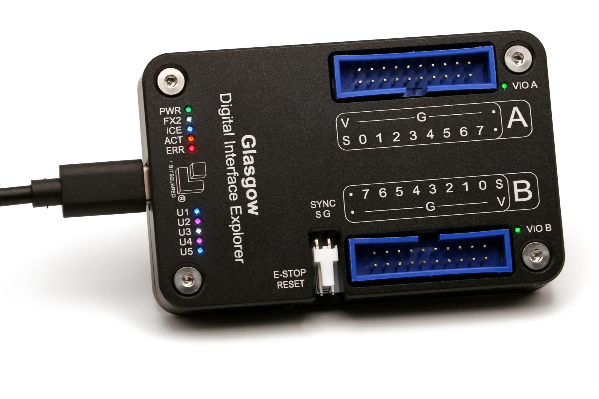

Introduction#
What is Glasgow?#
Glasgow Interface Explorer is a tool for exploring digital interfaces, aimed at embedded developers, reverse engineers, digital archivists, electronics hobbyists, and everyone else who wants to communicate with a wide range of digital devices with high reliability and minimum hassle. It can be connected to most digital interfaces without additional active or passive components, and includes extensive protection from unexpected conditions and operator error.
The Glasgow hardware can support many digital interfaces because it uses reconfigurable logic. Instead of only offering a small selection of standard hardware supported interfaces, it uses an FPGA to adapt on the fly to the task at hand without compromising on performance or reliability, even for unusual, custom, or obsolete interfaces.
The Glasgow software is a set of building blocks designed to eliminate incidental complexity. Each interface is packaged into a self-contained applet that can be used directly from the command line, or reused as a part of a more complex system. Using Glasgow does not require any programming knowledge, although it becomes much more powerful if you know a bit of Python.

What can I do with Glasgow?#
communicate via UART
automatically determine and follow the baud rate of device under test
initiate transactions via SPI or I²C
read and write 24-series I²C EEPROMs
read and write 25-series SPI Flash memories
determine memory parameters via SFDP
read and write ONFI-compatible Flash memories
determine memory parameters via ONFI parameter page
read and write parallel 27/28/29-series EPROMs, EEPROMs and Flash memories
determine the extent of floating gate charge decay and rescue data
program and verify AVR microcontrollers with SPI interface
automatically determine unknown JTAG pinout
play back JTAG SVF files
debug ARC processors via JTAG
debug some MIPS processors via EJTAG
program and verify XC9500XL CPLDs via JTAG
communicate using nRF24L01(+) radios
program nRF24LE1 and nRF24LU1(+) microcontrollers
synthesize sound using a Yamaha OPLx/OPM chip and play it in real time on a webpage
read raw modulated data from 5.25”/3.5” floppy drives
… and more!
Everything above can be done with only a Glasgow revC board, some wires, and depending on the device under test, external power.
What does using Glasgow look like?#
This screencast shows a typical command-line workflow:

What software does Glasgow use?#
Glasgow is written entirely in Python 3. The interface logic that runs on the FPGA is described using Amaranth, which is a Python-based domain specific language. The supporting code that runs on the host PC is written in Python with asyncio. This way, the logic on the FPGA can be assembled on demand for any requested configuration, keeping it as fast and compact as possible, and code can be shared between gateware and software, removing the need to add error-prone “glue” boilerplate.
Glasgow would not be possible without the open-source iCE40 FPGA toolchain, which is not only very reliable but also extremely fast. It is so fast that it usually only takes a few seconds to build a bitstream from scratch for something like a UART. When developing a new applet it is rarely necessary to wait for the toolchain to finish.
Implementing reliable, high-performance USB communication is not trivial—packetization, buffering, and USB quirks add up. Glasgow abstracts away USB: on the FPGA, the applet gateware writes to or reads from a FIFO, and on the host, applet software writes to or reads from a socket-like interface. Idiomatic Python code can communicate at maximum USB 2 bulk bandwidth on a modern PC without additional effort. Moreover, when a future Glasgow revision adds Ethernet next to USB, no changes to applet code will be necessary.
Debugging applets can be hard, especially if bidirectional communication over the same wires is involved. Glasgow provides a built-in cycle-accurate logic analyzer that can relate the I/O pin level and direction changes to commands and responses received and sent by the applet. The logic analyzer compresses waveforms and can pause the applet if its buffer is about to overflow.